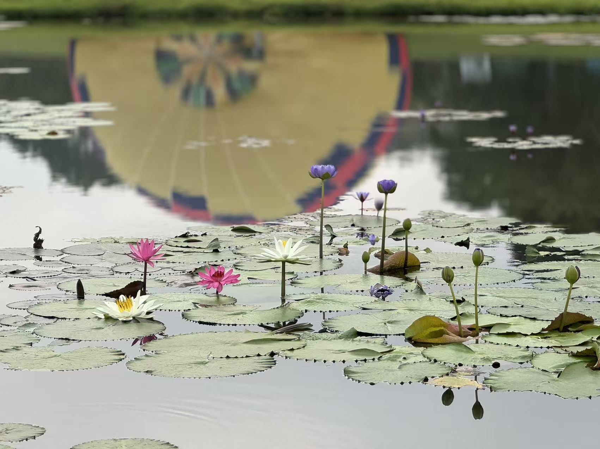
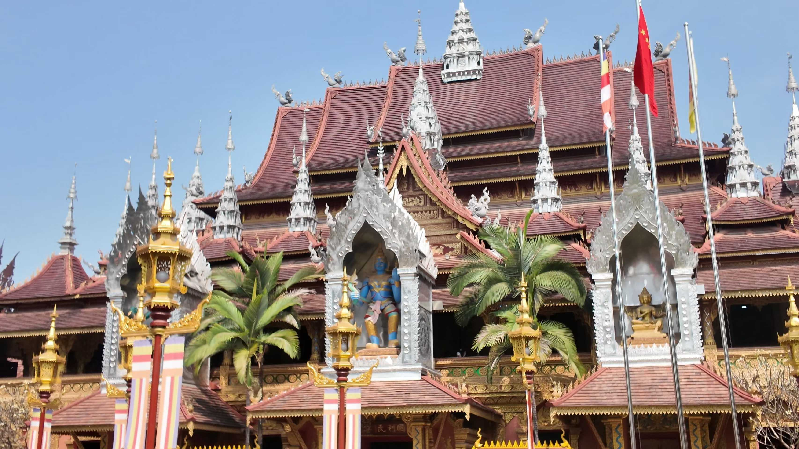
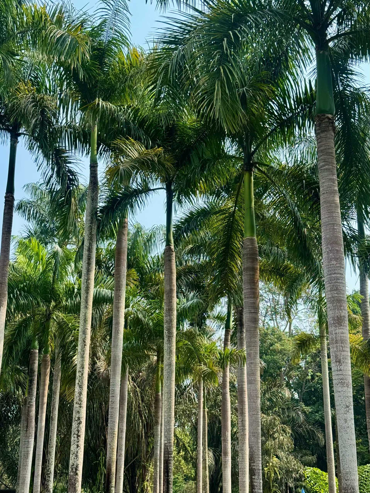
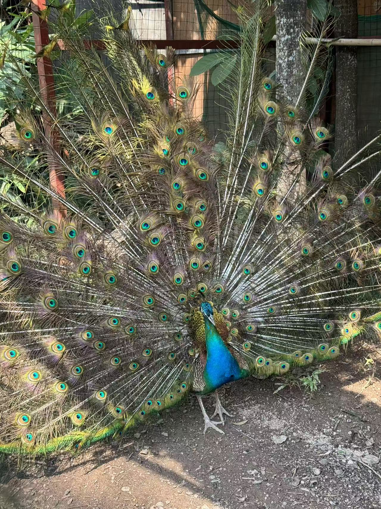
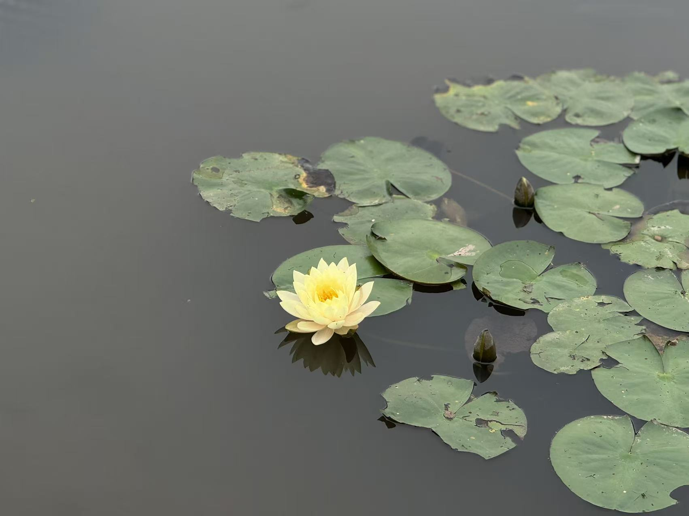
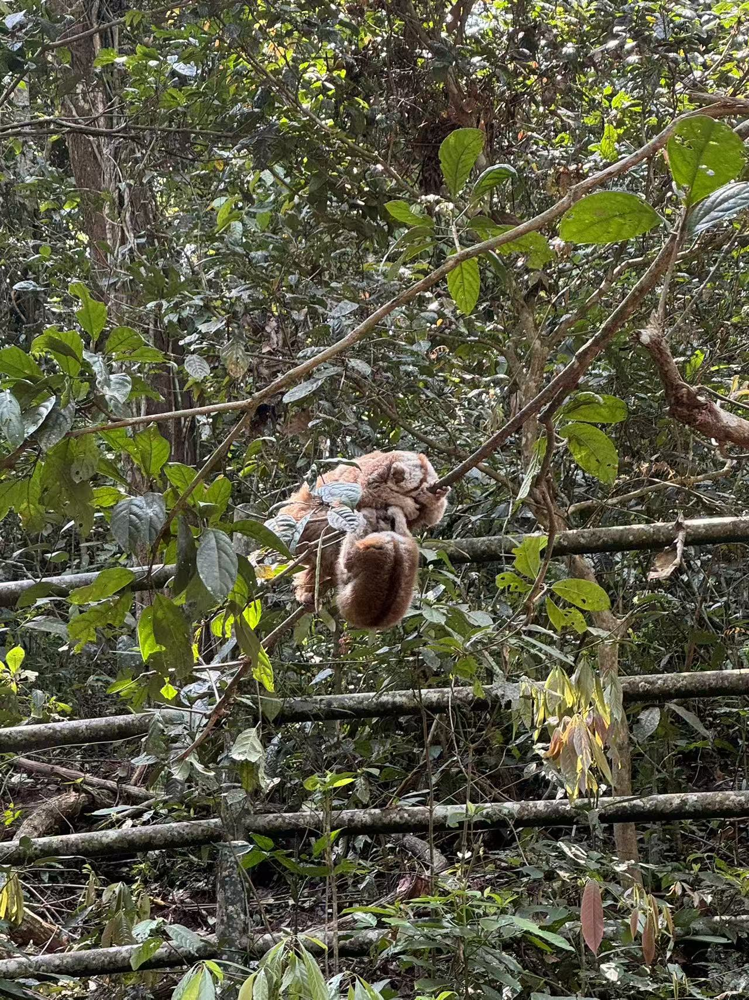
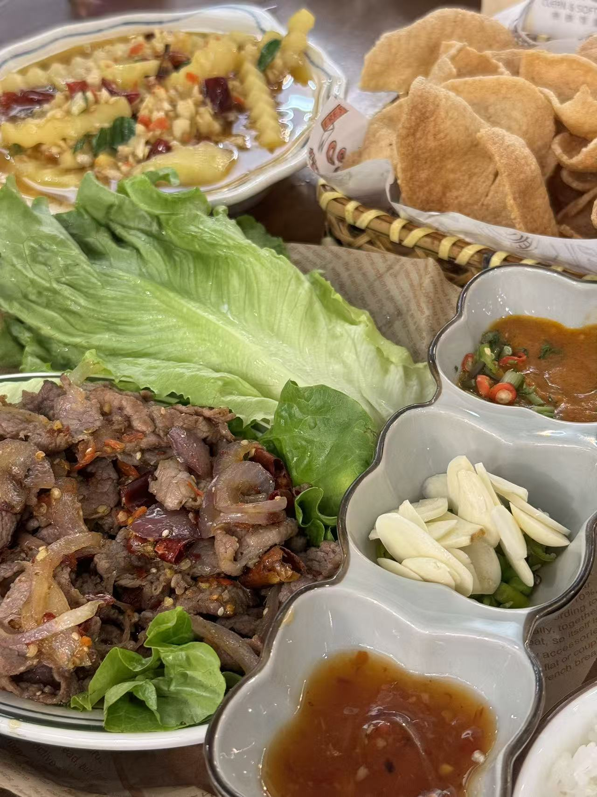
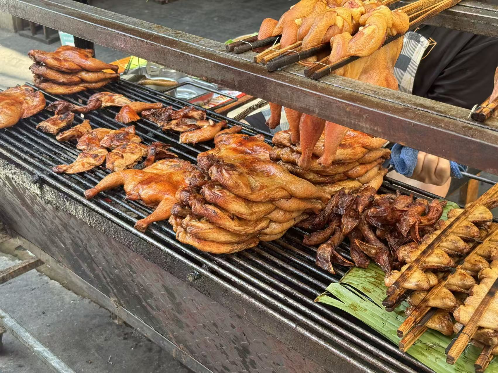
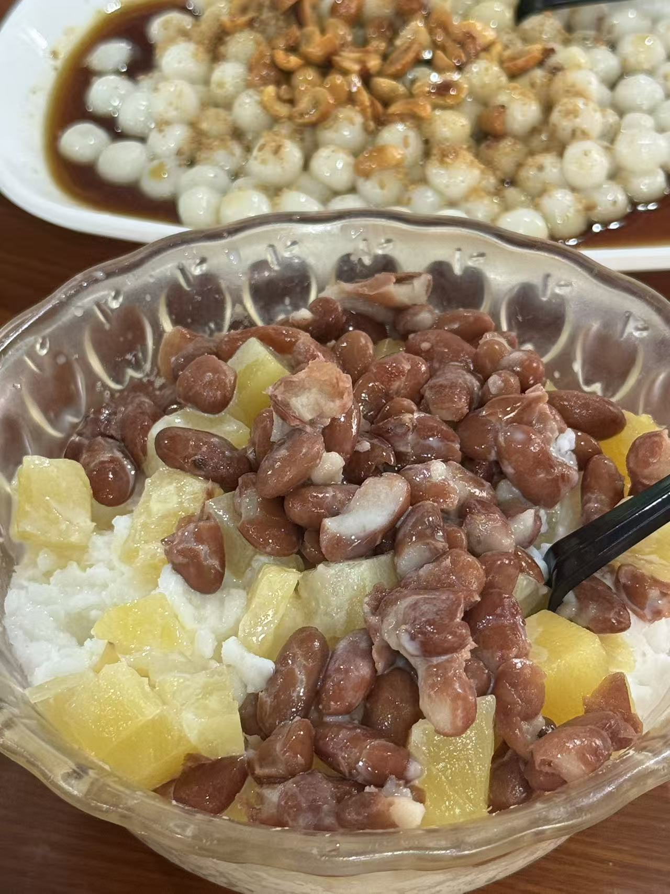

雨林记
Xishuangbanna · The Second Stop | 2026.03.18 — 19
SCROLL
南行 · 热带的风
Into the Tropics
从昆明到版纳，空气一下就不一样了。
湿热的风扑过来，像是一脚踏进了东南亚。
西双版纳，第二站。
湿热的风扑过来，像是一脚踏进了东南亚。
西双版纳，第二站。

池塘里的睡莲开得正好，粉的白的紫的，像一幅画。
01
佛寺 · 热带植物园 · 孔雀
March 18 — Temples, Gardens & Peacocks
傣族佛寺，金银交错的屋檐在蓝天下闪闪发光。

热带植物园
版纳的植物园完全是另一个世界。高大的棕榈树排成林荫道，抬头只看得到一片绿。空气又热又潮。
孔雀开屏
在园里遇到一只正在开屏的孔雀，尾巴上全是蓝绿色的"眼睛"。


一朵静静开着的黄色睡莲
紫色的莲花，版纳到处都是

在丛林里偶遇的小家伙，缩在树枝上打盹。
02
赏味 · 傣味的酸辣鲜香
March 19 — Dai Cuisine Adventure
版纳的傣味跟昆明完全不一样。
酸辣为主，香料味特别重，会让人有点吃不惯。
酸辣为主，香料味特别重，会让人有点吃不惯。
傣味拼盘 · Dai-style Feast

牛肉包烧 · Grilled Beef Lettuce Wraps

版纳烤鸡 · Banna Smoked Chicken
傣味的灵魂是香茅草和小米辣，
酸酸辣辣的，一口就到了东南亚（有点诡异。
甜品时间
冰冰凉凉的刨冰上面堆满了红豆和菠萝，旁边还有一碗傣味红糖糯米圆子，每一口都是热带的甜蜜。

版纳的寺庙和清迈的好像，又不完全一样。
两天的行程结束。
热带雨林、傣族佛寺、满街的烤鸡和鲜榨果汁——
这里像另一个国度。
继续出发，下一站见。